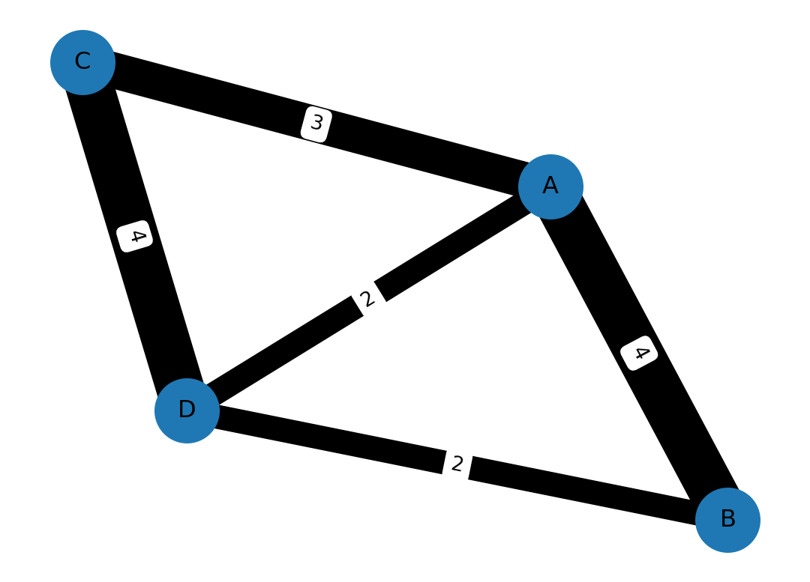

import time
import numpy as np
import matplotlib.pyplot as pltTime & memory efficiency
Time/computation: usage of %timeit
References:
magic commands are IPython commands such as: %timeit, %matplotlib, %autoreload. They work only in interactive cases (Ipython, Notebook, Jupyter lab etc.).
n = 1000
val = 5.4%timeit a = np.empty(n); a.fill(val)
# Alternative: uncomment below
# get_ipython().run_line_magic('timeit', 'a = np.empty(n); a.fill(val)')681 ns ± 35.6 ns per loop (mean ± std. dev. of 7 runs, 1,000,000 loops each)print('empty')
%timeit a = np.empty(n); a[:] = valempty
829 ns ± 57.4 ns per loop (mean ± std. dev. of 7 runs, 1,000,000 loops each)print('full')%timeit a = np.full((n,), val)1.7 µs ± 60 ns per loop (mean ± std. dev. of 7 runs, 1,000,000 loops each)print('ones')ones%timeit a = np.ones(n) * val3.34 µs ± 257 ns per loop (mean ± std. dev. of 7 runs, 100,000 loops each)print('repeat')repeat%timeit a = np.repeat(val, n)4.91 µs ± 237 ns per loop (mean ± std. dev. of 7 runs, 100,000 loops each)Alternatives
Use the time module thanks to import time
import time
start = time.time()
a = np.ones(n) * val
end = time.time()
print("Time to execute the command: {0:.5f} s.".format(end - start))Time to execute the command: 0.00010 s.Sparse matrices, graphs and memory
Sparse matrices are useful to handle potentially huge matrices, that have only a few non-zero coefficients:
Sparse data structures in Python, by Artem Golubin
Introduction to Sparse Matrices in Python with SciPy, by cmdlinetips
Examples:
- Natural language processing: We encode the presence of a word from a dictionary (let’s say the set of French words) and we put 0 / 1 in case of absence/presence of a word.
- One-hot encoding, used to represent categorical data as sparse binary vectors.
- the discretization of a physical system where very distant influences are set to zero (e.g. heat diffusion, fluid mechanics, electro/magnetism, etc.)
- Graphs: they are naturally represented by adjacency or incidence matrices (cf. below), and therefore beyond the graphs, maps!
Most common formats
- coo_matrix(arg1[, shape, dtype, copy]): A sparse matrix in COOrdinate format.
- csc_matrix(arg1[, shape, dtype, copy]): Compressed Sparse Column matrix
- csr_matrix(arg1[, shape, dtype, copy]): Compressed Sparse Row matrix
References:
from scipy import sparse
from scipy.sparse import isspmatrix
Id = sparse.eye(3)
print(Id.toarray())
print(f'Q: Is the matrix Id is sparse?\nA: {isspmatrix(Id)}')
n1 = 29
n2 = 29
mat_rnd = sparse.rand(n1, n2, density=0.25, format="csr",
random_state=42)
print(mat_rnd.toarray())
print(f'Q: Is the matrix mat_rnd is sparse?\nA: {isspmatrix(mat_rnd)}')[[1. 0. 0.]
[0. 1. 0.]
[0. 0. 1.]]
Q: Is the matrix Id is sparse?
A: True
[[0. 0.68298206 0. 0. 0. 0.
0.14312799 0. 0. 0. 0. 0.
0. 0. 0. 0. 0.4878098 0.
0. 0.35599148 0.10221266 0. 0.56550835 0.7677795
0.42359686 0.2253328 0. 0.53648135 0. ]
[0. 0.5344235 0. 0. 0. 0.
0. 0.39148211 0. 0. 0.84444067 0.
0. 0. 0. 0. 0.09229059 0.50610396
0. 0. 0.10424697 0. 0. 0.
0. 0. 0. 0. 0. ]
[0.77857194 0.82086147 0.77124667 0. 0.90786613 0.
0. 0. 0. 0. 0.13311693 0.
0.99769262 0. 0. 0. 0. 0.00530001
0. 0. 0. 0. 0.92404176 0.00259502
0.50228835 0. 0.08786811 0.33034848 0. ]
[0. 0. 0. 0. 0. 0.01220307
0. 0. 0. 0. 0. 0.
0. 0. 0. 0. 0. 0.
0. 0. 0. 0. 0. 0.5938831
0. 0. 0. 0. 0. ]
[0. 0.7228961 0. 0. 0.14773909 0.
0. 0. 0. 0. 0.05565349 0.
0.32158276 0. 0. 0.20454459 0.57748627 0.40851829
0. 0. 0. 0.01824248 0. 0.
0. 0. 0.23569175 0.20173046 0. ]
[0.13882477 0. 0.03047215 0. 0. 0.
0. 0.97506716 0. 0.16552051 0. 0.
0. 0.82679883 0. 0.36923048 0. 0.
0. 0. 0. 0. 0. 0.
0. 0.83858256 0. 0. 0.54871531]
[0. 0. 0. 0. 0. 0.
0. 0.75995541 0. 0. 0.4519486 0.
0. 0. 0. 0. 0.9106862 0.
0. 0.12281078 0. 0. 0. 0.59902936
0. 0. 0. 0.11669606 0. ]
[0.16673076 0. 0.37728597 0. 0. 0.
0. 0.33281579 0.56396509 0. 0. 0.69696146
0. 0. 0. 0. 0. 0.20507756
0. 0.37877263 0. 0.79428945 0. 0.
0. 0. 0. 0. 0. ]
[0. 0. 0.35414667 0. 0. 0.
0. 0.24435316 0. 0. 0. 0.95907479
0. 0. 0. 0. 0. 0.
0.35536245 0.33009951 0. 0. 0. 0.86721498
0. 0. 0. 0. 0. ]
[0. 0. 0.23321641 0.89421726 0. 0.
0. 0.53126575 0. 0. 0.49542363 0.18228388
0.71378245 0. 0. 0.20500181 0. 0.
0. 0. 0. 0. 0. 0.22902539
0. 0. 0. 0. 0. ]
[0.78151448 0.08451701 0. 0.10669925 0. 0.84231404
0. 0.79008464 0. 0. 0.79953713 0.
0. 0. 0. 0. 0. 0.
0. 0. 0.36535682 0. 0. 0.75240312
0. 0. 0. 0. 0. ]
[0. 0. 0. 0. 0. 0.
0. 0. 0. 0. 0. 0.
0. 0. 0.84070999 0. 0. 0.
0. 0. 0. 0. 0. 0.
0. 0. 0. 0.87862912 0. ]
[0. 0. 0. 0. 0. 0.
0. 0.86830111 0.1287484 0. 0. 0.45700022
0.43152814 0. 0. 0.0230226 0. 0.
0.39716383 0. 0. 0.52984002 0. 0.71845727
0. 0. 0.69371761 0. 0. ]
[0. 0. 0. 0. 0. 0.
0. 0. 0. 0. 0. 0.
0.4982477 0. 0. 0.68778472 0.47661948 0.
0.7072301 0. 0. 0.58419948 0.53533556 0.
0.73682248 0. 0. 0.91875052 0. ]
[0. 0. 0.19950693 0.74146091 0. 0.
0. 0. 0. 0.06234136 0. 0.06661911
0.60395787 0. 0.70698046 0. 0.3551043 0.
0.4731662 0. 0. 0.34252426 0.08920433 0.
0. 0.72051606 0. 0. 0. ]
[0. 0. 0. 0. 0. 0.
0. 0.75463529 0.73054914 0. 0. 0.73740521
0.60610188 0. 0. 0. 0. 0.
0.37882157 0. 0.72609559 0. 0. 0.84043963
0. 0. 0. 0. 0.00753436]
[0. 0. 0. 0. 0. 0.
0. 0. 0. 0. 0.48635748 0.
0. 0.23590603 0.71406408 0.92644942 0. 0.
0. 0. 0. 0. 0. 0.
0. 0.37922858 0. 0. 0.53503673]
[0. 0. 0. 0. 0.22735098 0.
0. 0. 0. 0. 0. 0.
0. 0. 0. 0. 0. 0.
0.31619658 0.49398149 0. 0. 0. 0.
0. 0. 0. 0.56445854 0. ]
[0. 0. 0.74597453 0. 0. 0.
0.59727808 0. 0.15697768 0. 0. 0.
0. 0. 0. 0.13911619 0. 0.
0. 0. 0. 0. 0.59296291 0.
0. 0.45426797 0. 0. 0. ]
[0. 0. 0.73624718 0. 0. 0.
0. 0. 0. 0. 0. 0.
0.18632088 0. 0. 0. 0.58830668 0.82513268
0.72159655 0.91739561 0. 0.8996474 0. 0.
0. 0. 0. 0. 0.07732107]
[0. 0.99725553 0.93369182 0. 0. 0.
0. 0. 0. 0.32064219 0. 0.
0.85081752 0. 0. 0. 0. 0.33744683
0. 0. 0. 0. 0. 0.89661026
0. 0. 0.53986064 0. 0. ]
[0. 0. 0.77188198 0. 0.08788762 0.
0. 0. 0. 0. 0.4795821 0.
0. 0. 0. 0. 0.03180468 0.
0. 0. 0. 0. 0.57599842 0.
0. 0. 0.96799407 0.99092948 0. ]
[0. 0. 0. 0.71095248 0. 0.
0.23611653 0. 0.51165701 0. 0. 0.
0. 0. 0.5984427 0. 0. 0.
0.48114539 0. 0.06892154 0.47396994 0. 0.
0. 0. 0. 0. 0. ]
[0.64882284 0. 0.53978106 0.75050192 0.68716551 0.82794089
0. 0. 0. 0. 0. 0.63375856
0. 0. 0. 0. 0. 0.61495026
0. 0. 0. 0. 0. 0.
0. 0. 0. 0. 0.85072746]
[0. 0. 0. 0. 0. 0.
0.08729018 0.18640499 0. 0. 0.62410154 0.
0. 0. 0. 0. 0. 0.
0. 0.93293807 0. 0. 0. 0.
0.53185748 0.93201434 0. 0. 0.49074878]
[0. 0.0027109 0. 0. 0. 0.
0.37443537 0. 0. 0.55774227 0. 0.57315085
0. 0. 0. 0. 0. 0.25601553
0. 0. 0. 0. 0. 0.
0. 0. 0. 0. 0.74961623]
[0. 0.91185241 0.04809464 0. 0. 0.
0. 0. 0. 0. 0.80586489 0.
0. 0. 0.60755522 0. 0.53659065 0.10486917
0. 0. 0.40895518 0.1007946 0. 0.
0. 0.05163548 0. 0. 0. ]
[0. 0. 0. 0. 0. 0.
0. 0. 0.54860312 0. 0. 0.54892198
0.43874468 0. 0. 0.10291603 0. 0.
0. 0. 0. 0.68457155 0. 0.89966745
0.58653543 0. 0.71617907 0. 0.54284931]
[0. 0. 0.986257 0. 0. 0.
0. 0.28792962 0. 0. 0. 0.
0. 0.34292686 0. 0. 0. 0.
0. 0.65136721 0. 0. 0. 0.
0. 0. 0. 0. 0. ]]
Q: Is the matrix mat_rnd is sparse?
A: TrueA matrix-vector product: as usual (also can use np.dot())
v = np.random.rand(n2)
mat_rnd@varray([1.55109114, 0.8597592 , 2.58720257, 0.05469795, 1.62847223,
1.22807581, 0.43789353, 1.6082845 , 0.9750719 , 1.09705395,
1.04943889, 0.31164555, 1.6031858 , 2.8561342 , 1.97383502,
1.23514467, 1.31182121, 0.68217548, 1.18517612, 2.68535661,
2.12617849, 1.47757534, 1.66755811, 3.01906009, 1.19177843,
1.06404137, 1.1973925 , 2.28247342, 0.63638076])Graphs and sparsity
A classical framework for the application of sparse matrices is with graphs: although the number of nodes can be huge, each node of a graph is in general not connected to all nodes. If we represent a graph by its adjacency matrix:
Definition: adjacency matrix
Suppose that G=(V,E) is a graph, where \left|V\right|=n. Suppose that the vertices of G are arbitrarily numbered v_1,\ldots,v_n. The adjacency matrix A of G is the matrix n \times n of general term:
A_{{i,j}}= \left\{ \begin{array}{rl} 1, & \text{if } (v_i,v_j) \in E \\ 0, & \text{o.w.} \end{array} \right.
Note that instead of 1, the value could vary on a per-edge basis (cf. Figure 1).
Usage depends on the nature and structure of the data: - csc_matrix is more efficient for slicing by column - csr_matrix is more efficient for the row case.
import networkx as nx
nx.__version__'3.1'Create a graph:
G = nx.Graph()
G.add_edge('A', 'B', weight=4)
G.add_edge('A', 'C', weight=3)
G.add_edge('B', 'D', weight=2)
G.add_edge('C', 'D', weight=4)
G.add_edge('D', 'A', weight=2)and then visualize it:
my_seed = 44
nx.draw_networkx(
G, with_labels=True, node_size=1000, pos=nx.spring_layout(G, seed=my_seed)
)
labels = nx.get_edge_attributes(G, "weight")
nx.draw_networkx_edge_labels(
G, pos=nx.spring_layout(G, seed=my_seed), edge_labels=labels
)
nx.draw_networkx_edges(
G,
pos=nx.spring_layout(G, seed=my_seed),
width=[5 * i for i in list(labels.values())],
)
plt.axis("off")
plt.show()

Note that a variant of adjacency matrix
A = nx.adjacency_matrix(G)
print(isspmatrix(A))
print(A.todense())
nx.shortest_path(G, 'C', 'B', weight='weight')True
[[0 4 3 2]
[4 0 0 2]
[3 0 0 4]
[2 2 4 0]]['C', 'D', 'B']Definition : incidence matrix
Let G = (V,E) be a (non-oriented) graph with n vertices, V = [1,\dots,n], and p edges, E = [1,\dots,p]. The graph can be represented by its vertex-edge incidence matrix D^\top \in \mathbb{R}^{p \times n} defined by
(D^\top)_{{e,v}} = \left\{ \begin{array}{rl} + 1, & \text{if } v = \min(i,j) \\ -1, & \text{si } v = \max(i,j) \\ 0, & \text{sinon} \end{array} \right.
where e = (i,j).
Definition : Laplacian matrix
The matrix L=D D^\top is the so-called graph Laplacian of G
D = nx.incidence_matrix(G, oriented=True).T
print(isspmatrix(D))
print(D.todense())True
[[-1. 1. 0. 0.]
[-1. 0. 1. 0.]
[-1. 0. 0. 1.]
[ 0. -1. 0. 1.]
[ 0. 0. -1. 1.]]Interactive graph visualisation
g = nx.karate_club_graph()
list_degree = list(
g.degree()
) # Return a list of tuples each tuple is (node, deg)
nodes, degree = map(
list, zip(*list_degree)
) # Build a node list and corresponding degree list
fig, ax = plt.subplots(1, 1, figsize=(8, 6))
nx.draw(
g,
ax=ax,
nodelist=nodes,
node_size=[(v * 30) + 1 for v in degree],
width=4,
alpha=0.7,
edgecolors="white",
node_color="#1f78b4",
edge_color="#1f78b4",
)
plt.axis("off")
plt.show()
fig, ax = plt.subplots()
A = nx.adjacency_matrix(g).T
print(A.todense())
ax = plt.spy(A)
print(f"Pourcentage of active edges: {(g.number_of_edges() / g.number_of_nodes()**2) * 100:.2f} %")[[0 4 5 ... 2 0 0]
[4 0 6 ... 0 0 0]
[5 6 0 ... 0 2 0]
...
[2 0 0 ... 0 4 4]
[0 0 2 ... 4 0 5]
[0 0 0 ... 4 5 0]]
Pourcentage of active edges: 6.75 %
Remark: a possible visualization with Javascript (not so stable though, can be skipped)
Planar graphs and maps
Open Street Map interfaced with networkx, using the package osmnx.
Known bug: - Cannot import name ‘CRS’ from ‘pyproj’ in osmnx
So pick version 0.14 at least conda install osmnx>=0.14 or pip install osmnx>=0.10.
For Windows users, there might be some trouble with installing the fiona package, see:
Special case for osmnx on Windows follow the next step in order:
pip install osmnxpip install Rtreeconda install -c conda-forge libspatialindex=1.9.3pip install osmnx- Install all packages required up to
fiona. conda install -c conda-forge geopandas- Say yes to everything
- Once done, launch
pip install osmnx==1.0.1s You will also need to install the packagefolium
import foliummap_osm = folium.Map(location=[43.610769, 3.876716])map_osm.add_child(folium.RegularPolygonMarker(location=[43.610769, 3.876716],
fill_color='#132b5e', radius=5))
map_osmMake this Notebook Trusted to load map: File -> Trust Notebook
import osmnx as ox
ox.settings.use_cache=True
ox.__version__'1.3.1.post0'G = ox.graph_from_place('Montpellier, France', network_type='bike')
print(f"nb edges: {G.number_of_edges()}")
print(f"nb nodes: {G.number_of_nodes()}")nb edges: 33992
nb nodes: 15345fig, ax = ox.plot_graph(G)
Visualize the shortest path between two points
References:
origin = ox.geocoder.geocode('Place Eugène Bataillon, Montpellier, France')
destination = ox.geocoder.geocode('Maison du Lez, Montpellier, France')
origin_node = ox.nearest_nodes(G, origin[1], origin[0])
destination_node = ox.nearest_nodes(G, destination[1], destination[0])
print(origin)
print(destination)
route = ox.distance.shortest_path(G, origin_node, destination_node)
# XXX double check if weights are taken into account.(43.6314565, 3.8607694)
(43.61032245, 3.8966295)fig, ax = ox.plot_graph_route(G, route)
ax = ox.plot_route_folium(G, route, weight=5, color='#AA1111', opacity=0.7)
axMake this Notebook Trusted to load map: File -> Trust Notebook
G.is_multigraph()Trueedges = ox.graph_to_gdfs(G, nodes=False, edges=True)
nodes = ox.graph_to_gdfs(G, nodes=True, edges=False)
# Check columns
print(edges.columns)
print(nodes.columns)Index(['osmid', 'oneway', 'highway', 'reversed', 'length', 'geometry', 'lanes',
'name', 'maxspeed', 'junction', 'ref', 'bridge', 'service', 'access',
'width', 'tunnel'],
dtype='object')
Index(['y', 'x', 'street_count', 'highway', 'ref', 'geometry'], dtype='object')D = nx.incidence_matrix(G, oriented=True).Telement = np.zeros(1, dtype=float)
mem = np.prod(D.shape) * element.data.nbytes / (1024**2)
print('Size of full matrix with zeros: {0:3.2f} MB'.format(mem))
print('Size of sparse matrix: {0:3.2f} MB'.format(D.data.nbytes/(1024**2) ))
print('Ratio of full matrix size / sparse: {0:3.2f}%'.format(100 * D.data.nbytes / (1024**2 * mem)))
print(isspmatrix(D))Size of full matrix with zeros: 3979.55 MB
Size of sparse matrix: 0.51 MB
Ratio of full matrix size / sparse: 0.01%
TrueAlternatively: you can uncomment the following line, and check that the size of a similar matrix (with a non-sparse format) would be. >>> Size of a full matrix encoding the zeros: 4 gB
Create a matrix of similar size. BEWARE: This creates a huge matrix:
M = np.random.randn(G.number_of_nodes(), G.number_of_nodes())
print('Size of a full encoding the zeros: {0:3.2f} MB'.format(M.nbytes/(1024**2)))Graph sparsity
print(" {0:.2} % of edges only are needed to represent the graph of Montpellier".format(100 * G.number_of_edges() / G.number_of_nodes() ** 2)) 0.014 % of edges only are needed to represent the graph of MontpellierReferences:
For more on profiling
Debugging: package pdb
References:
- Debugging Jupyter notebooks by David Hamann
- Advanced Python Debugging with pdb by Steven Kryskalla
- Debug Python with VSCode
Let us use import pdb; pdb.set_trace() to enter a code and inspect it. Push the key c and then enter to go next.
A first recommendation is to use the python debugger in your IDE.
Pure python or IPython can use the pdb package and the command pdb.set_trace(). A command prompt launches when an error is met, and you can check the current status of the environment. Useful shortcuts are available (e.g., touche c, touche j etc.); a full list is available here.s
def function_debile(x):
answer = 42
answer += x
return answerfunction_debile(12)def illustrate_pdb(x):
answer = 42
import pdb; pdb.set_trace()
answer += x
return answerillustrate_pdb(12)A terminal is launched when a problem occurs, and one can then take over and see what’s going on.
get_ipython().run_line_magic('pdb', '')def blobl_func(x):
answer = 0
for i in range(x, -1, -1):
print(i)
answer += 1 / i
return answer
blobl_func(4)